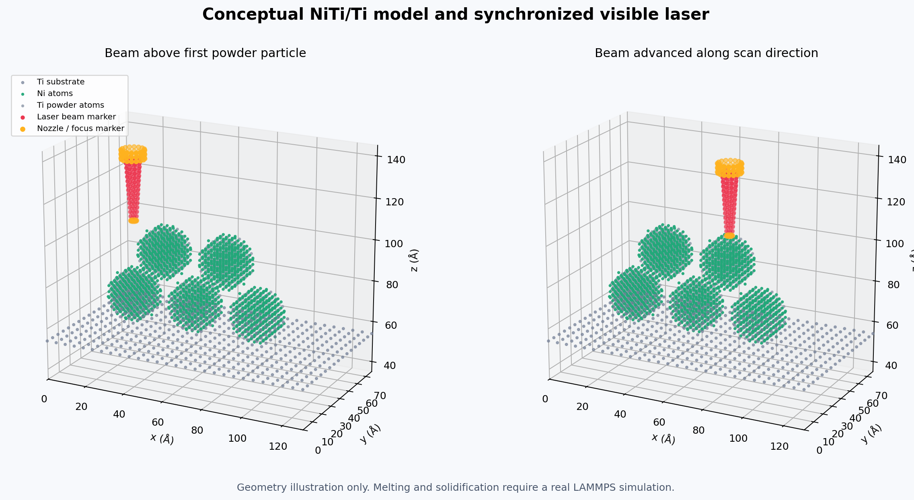

NiTi LPBF Figures and Simulation Videos
Selected visual material from the atomistic NiTi nanoparticle consolidation and laser-heating workflow.
1. Initial NiTi LPBF Geometry

Representative atomistic geometry used to define the NiTi particle/substrate configuration before thermal processing and consolidation simulations.
2. Representative Process/Result Figure

Selected public-facing result from the NiTi processing workflow illustrating the evolving atomistic configuration and processing response used to assess consolidation behavior.
3. Initial Setup Video
Browser-compatible H.264 export of the initial particle/substrate configuration before laser-driven thermal evolution.
4. NiTi Atomistic Simulation
Browser-compatible H.264 visualization of the atomistic NiTi system during the simulated processing sequence.
5. Laser-Heating NiTi Simulation
Browser-compatible H.264 visualization of laser-heating-driven atomistic evolution in the NiTi particle/substrate system.
Only selected public-facing media are shown. Detailed production inputs, unpublished datasets, and active-manuscript files are intentionally excluded.